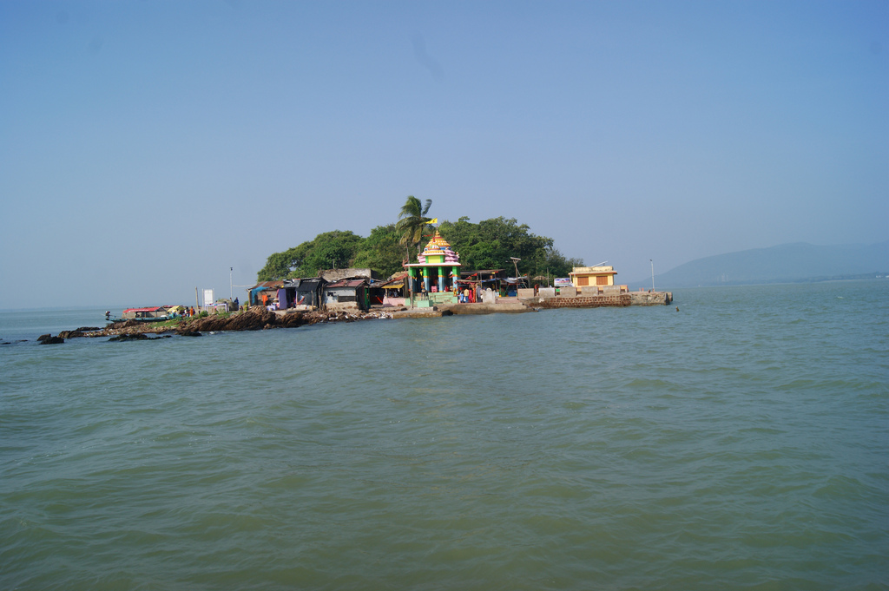

|

|
Asia's largest brackish water lagoon with water spread ranging from 1165 sq km m the rainy season to 906 sq km in the dry season is nestled in the heart of the coastal Odisha (Orissa). It extends from Bhusandpur in Puri district in the North to Rambha-Malud in Ganjan district in the South, separated from the Bay of Bengal by a 60 km long narrow strip of marshy islands and sand-flats.
Some of the prominent islands like Nalabana, Kalijal, Somolo, Honeymoon, Break-fast, Birds and Rajahansa inhabited by small subsistence fishermen families, are popular destinations for daily boat trips. Because of its rich bio-diversity and socio-economic importance, Chilika was designated as a Ramsar site in 1981 to afford better protection.
Chilika is recognized as one of the most important wetlands in the world because it is home to a phenomenal variety of birds. Chilika Lake offers visitors a spectacular display of its colorful avian charms in a thousand different hues presented by over 160 species in the peak season between November and February. The lake and its reed islands teem with nesting birds-white bellied sea eagles, ospreys, golden plovers, sand pipers, flamingos, pelicans, shovellers, gulls, include migratory ones flying great distances from Iran, Central Asia and Siberia.
|